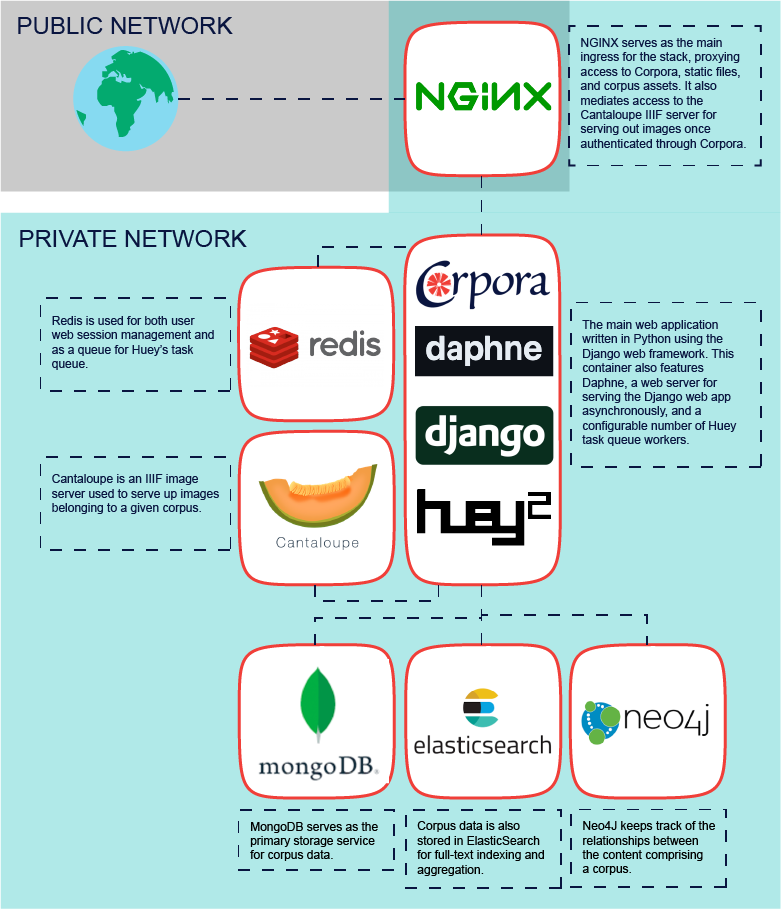

Deploying
Corpora is built from the ground up as a "Dockerized" stack of services. In other words, each service lives in its own Docker container, and these containers are orchestrated to provide Corpora's functionality. The following diagram is an attempt to provide a bird's eye view of how these containers are used:

Despite this complexity, Corpora was designed in order to make installing it on personal computers or servers as easy as possible thanks to the "docker compose" convention of orchestrating containers. Below are instructions for installing Corpora on Mac, Windows, and Linux.
Prerequisites
Regardless of which operating system you're using, you'll need to install Docker. The easiest way to do this on Mac or Windows is by installing Docker Desktop. For a Linux server, you'll want to install Docker and Docker Compose packages. Instructions for installing on Ubuntu, for instance, can be found here.
Once Docker has been installed, you'll want to identify two different places to store files on your system. The first is where you want to clone the Corpora codebase, and the second is where you want to store the data and configuration for your instance of Corpora. These directories can exist wherever you'd like, but for the sake of convenience throughout these instructions, we'll assume you've created the directory /corpora and will be making your two directories in there.
If you have Git installed on your machine, the easiest way to acquire the codebase is to clone the Corpora repository:
cd /corpora
git clone https://github.com/bptarpley/corpora.git codebase
The commands above will create the directory /corpora/codebase and pull of the code into that directory. If you don't use git, an alternative is to download the .zip file for Corpora's code and unzip it inside the /corpora directory--for the purpose of these instructions you would then rename the unzipped folder to "codebase."
Once you have your codebase directory set up, you'll want to create another directory inside of /corpora called "data." Make note of the path to this second directory (i.e. /corpora/data), as you'll be needing it for creating a docker-compose.yml file in later steps.
Installing and Running on Your Local Machine (Mac or Windows)
Once you've installed Docker Desktop and made your two directories according to the instructions above, you'll need to go to the codebase directory and make a copy of the docker-compose.yml.example file, naming it docker-compose.yml. Note: Be sure your copy of the file lives in the same codebase directory as the original. You'll then need to edit that file using any text editor in order to replace any instance of /your/corpora/basedir with the data directory you created, i.e. /corpora/data.
Having created and edited your docker-compose.yml file, you'll need to open a terminal window (Mac) or DOS prompt (Windows) and change to the codebase directory, i.e.:
cd /corpora/codebase
You'll then want to execute the following command to prompt Docker to pull down the necessary images and start running the Corpora stack:
docker-compose up -d
Note: Docker will only pull down the required images the first time you run that command, but depending on your internet connection, this may take some time. Once it has pulled the images and created each service, Corpora's startup script is set to wait a full minute before initializing--this is to give the MongoDB, Elasticsearch, and Neo4J containers enough time to spin up. If at any time you want to check the logs for the Corpora container, you can do so by executing this command in your terminal/DOS prompt:
docker-compose logs -f corpora
Eventually, you'll see the following log message letting you know Corpora was initialized properly:
---------------------------
CORPORA INITIALIZED
---------------------------
Once this happens, it may take another few seconds for the Daphne web server to actually serve the Corpora web application, but you should eventually be able to use the application by going to this URL in your local machine's browser: http://localhost. You should see Corpora's login prompt, and the default admin account's username and password are both simply corpora.
To stop Corpora gracefully, you'll want to go back to the terminal/DOS prompt. If you're streaming log messages, you'll want to stop doing so by hitting CTRL+c. You'll then want to run this command:
docker-compose down
To get it running again, open a terminal/DOS prompt, change to the /corpora/codebase directory, and issue docker-compose up -d.
Installing and Running on a Linux Server
While the above instructions for running Corpora on a local machine will also work on a Linux server, there are some additional considerations when deploying it to a server that will be primarily accessed remotely. In such a scenario, you will likely have a domain name (like mycorpora.org) you'll want to use, you'll want to use SSL to secure network traffic, and will probably want to run the Docker stack in Swarm mode rather than using Docker Compose for performance and stability.
Using a Custom Domain Name
In order for the Corpora web app to respond correctly to web requests at a specific domain, you'll need to add that domain to the comma-delimited list of domain names provided in the CRP_HOSTS environment variable. This can most easily be configured by editing your docker-compose.yml file. You'll want to find the following line under the "environment" section of the "corpora" service:
CRP_HOSTS: localhost
Append a comma directly after "localhost" and add your own domain name, i.e.:
CRP_HOSTS: localhost,mycorpora.org
Running in Swarm Mode
Docker Swarm is a technology for orchestrating containers in a highly available, fault-tolerant server environment (it's what Kubernetes uses under the hood). Ideally, a fully-fledged Docker Swarm deployment would run as a cluster of servers with three master nodes and at least a couple of worker nodes, and configuring such a setup is beyond the scope of this documentation. Swarm will run, however, on a single server, and instructions for doing so are provided here for the sake of simplicity.
First, make sure you've taken care of the prerequisites, made a copy of docker-compose.yml.example named docker-compose.yml and replaced all instances of /your/corpora/basedir with the path to your data directory, i.e. /corpora/data. Next, you'll want to make sure your server's Docker instance is running in Swarm mode by executing this command:
docker swarm init
Then, you'll want to create a private network to keep the traffic between Corpora's various services contained:
docker network create -d overlay corpora-private
Next, you'll want to edit the docker-compose.yml file, adding the following section to each of the services (nginx, corpora, redis, iiif, mongo, neo4j, and elastic):
networks:
- corpora-private
At the bottom of your docker-compose.yml file, you'll then specify a separate "networks" section at the root level of indentation:
networks:
corpora-private:
external: true
Finally, you can actually deploy the corpora stack as a Swarm service by issuing this command inside the codebase directory:
docker stack deploy corpora -c docker-compose.yml
You can watch the logs for Corpora running as a Swarm service by issuing this command:
docker service logs -f corpora_corpora
Note: Occasionally upon starting, Nginx marks the upstream Corpora service as unavailable because it initialized much faster than the Corpora service. If this is the case, you'll see a "Bad Gateway" error when trying to access Corpora. To fix this, you'll want to just restart the NGINX service by executing this command:
docker service update --force corpora_nginx
Once everything's up and running properly, you should be able to navigate to your domain and see the Corpora login prompt. Be sure to change the password (corpora) for the default "corpora" user as soon as possible.
To stop the Corpora services running in swarm mode, issue this command:
docker stack rm corpora
Using SSL
Regardless of where you terminate your SSL traffic, you'll need to configure the Corpora service properly so it can be aware of the need to use the "https" prefix instead of "http" when generating internal links. To do so, you'll need to edit the docker-compose.yml file, find the line that reads
CRP_USE_SSL: "no"
and change the "no" value to "yes".